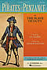

You are here: > > Scores
You can purchase copies of Pirates of Penzance scores from the following locations. They offer online, or at least e-mail, ordering, and shipment to anywhere in the world.
- Chappells of Bond Street, now at 152-160 Wardour Street, carry the scores for all 13 G&S operas and are willing to ship them anywhere in the world. Their telephone number is +44(0) 20 7432 4400.
- Christopher Browne's Gilbert & Sullivan Catalogue — Many different items, including books, libretti, sheet music, postcards, posters and recordings.
- Dover Publications Scores — Both vocal and full orchestra scores in new editions by Carl Simpson and Ephraim Hammett Jones. They have turned to the original manuscripts and early sources to produce handsome, newly engraved plates closest to Gilbert and Sullivan's first intentions. All voice parts are included, in addition to the complete dialogue.
- D'Oyly Carte Opera Company — The music hire library has available full orchestra and two-piano sets for Pirates.
- PJ Music Works has produced a new orchestration recently used by the Radlett Light Operatic Society (UK) and to be used by Abbots Langley G&S society (UK). This new version has single wind and brass together with percussion and strings and can be performed effectively with 15 instrumentalists whilst providing colour and balance as close to the original as possible. Visit their website for more information.
- John Pitts: New, easy-to-use reduced band arrangements of The Pirates of Penzance for flute, clarinet, trumpet, violin, keyboard and drums (as used by Bristol Savoy Operatic Society and the Ocean Theatre Company). Ł80 hire per week plus P&P (plus deposit). Also available: Gondoliers and Iolanthe.
- G&S Works, Inc. provides affordable, specialized orchestrations to theaters that require a smaller orchestra for their G&S operettas. These orchestrations provide a rich, full sound from a smaller ensemble. Three orchestrations are currently available: The Pirates of Penzance, H.M.S. Pinafore, and The Gondoliers.
- Opus 1 Music — Exclusive North American agents for rental of "The Newby Scores" of the 13 G&S operas. The arrangements are scored for as few as 12 or 13 instrumentalists (or as many as the music director cares to include) and still maintain a balanced, artistic accompaniment. The "Newby Scores" have been used all over the English-speaking world.
- Pattersong Music - Reduced orchestrations of The Mikado, Pirates, Iolanthe, HMS Pinafore & Patience are available for hire from Martin Paterson. The arrangements are ideal for use in smaller venues, where either a full orchestra would not fit in the space available, or where the full orchestral sound would be too much for the singers. Each arrangement is typically for Piano and 6-7 winds and strings.
- Sheet Music Plus — The ultimate online sheet music source. They have over 336,000 titles to choose from, and you can order online. Flat rate shipping of $2.99 to any US address. Click on the following links to go directly to their Pirates score sales pages:
 |
Broadway Musical Vocal Score For mixed choir (with solos) and piano accompaniment. From the Broadway musical The Pirates Of Penzance. Format: vocal score. With choral notation, piano reduction, introductory text and black & white illustrations. 213 pages. 7.5x11 inches. Published by G. Schirmer. | |
| Warner Brothers Vocal Score Edited by Carolcuellar / Richard Martin. Songbook (vocal score). Published by Warner Brothers. | ||
| Full Orchestra Score Arranged by Ted Ricketts. Full Orchestra. Size 9x12 inches. Published by Hal Leonard. | ||
| Trillenium Reduced Orchestra Score Trans. Don Stewart. For Reduction for 1121/111/Percussion & Strings. This edition: Score. Commissioned by Opera North. Published by Trillenium Music Company. | ||
| Trillenium Reduced Orchestra Parts Trans. Don Stewart. For Reduction for 1121/111/Percussion & Strings. This edition: Parts. Commissioned by Opera North. Published by Trillenium Music Company. | ||
| Aranged for Concert Band (with condensed score) Godfrey, ADOLPHUS FREDERICK (1837-1882), ARRANGER. For Concert Band. Reprinted from Chappell. et with condensed score. Published by Kalmus. | ||
| Schirmer Chorus Parts Chorus Parts. (SATB). Size 6.8x10.5 inches. 64 pages. Published by G. Schirmer, Inc. | ||
| Shawnee Press Score Score. Published by Shawnee Press. | ||
| Shawnee Press Piano Score Piano. Published by Shawnee Press. | ||
| Shawnee Press Directors Score Arranged by Arnold, M. J. directors score. Published by Shawnee Press. | ||
| Climbing Over Rocky Mountain (6-PACK) For choir. Choral/Vocal (Choral Performance Music). Level: Level 3. Published by Alfred Publishing. 6-PACK includes six original copies of this piece. |
- Tams-Witmark Music Library, Inc. - The Tams-Whitmark Music Library, which is located in New York City, has available the original D'Oyly Carte Orchestration for Pirates.
- WVD Press publishes a new edition of the conductor's score and orchestral parts of Pirates.
|
Page updated 20 August, 2011